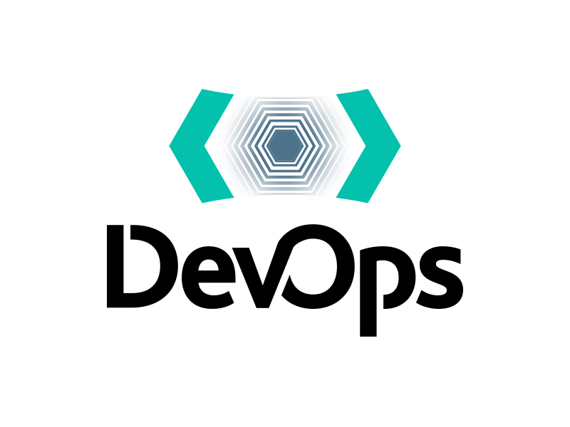

DevOps is a methodology in the software development and IT industry. Used as a set of practices and tools, DevOps integrates and automates the work of software development (Dev) and IT operations (Ops) as a means for improving and shortening the systems development life cycle.
 PUSH ME!